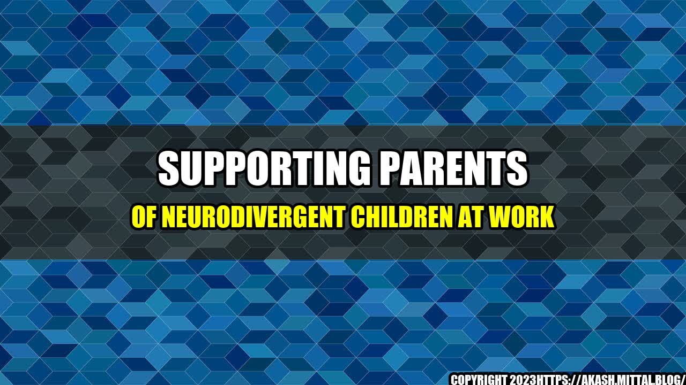

Supporting Parents of Neurodivergent Children at Work

When John started working at a marketing firm, he was thrilled to have found a job that was in his field of expertise. However, he soon realized that he was struggling to balance his work commitments with the needs of his son who had been diagnosed with ADHD and dyslexia.
John's son required a lot of support in school, which meant taking time off work to attend teacher meetings, therapy sessions, and tutoring sessions. This resulted in John feeling overwhelmed and stressed, and he struggled to perform at his best at work.
Unfortunately, John's experience is not unique. Parents of neurodivergent children often face unique challenges that can make balancing work and home life extremely difficult.
The Need for Employer Support
Employers have a role to play in ensuring that their employees who are parents of neurodivergent children are supported and able to excel in their roles. Here are some quantifiable examples of why this support is needed:
- 1 in 6 children in the United States has a developmental disability, according to the Centers for Disease Control and Prevention.
- 64% of parents with disabled children said they did not have access to flexible working arrangements, according to a survey by Scope.
- 70% of mothers of children with special needs reported not having the same career opportunities as other women, according to a study by the National Organization on Disability.
These statistics show that parents of neurodivergent children face unique challenges that can impact their work performance and career progression. However, employers who offer support and accommodations can help these employees thrive.
Ways Employers Can Support Parents of Neurodivergent Children
Here are some practical tips for employers who want to support parents of neurodivergent children:
- Offer flexible working arrangements. This could include allowing parents to work from home, adjust their hours, or take time off when needed to attend to their children's needs. This can help reduce stress and enable parents to better manage their work and home responsibilities.
- Provide access to resources and support networks. Employers can offer access to counseling services, employee resource groups, and mentorship programs to help parents connect with others who are facing similar challenges.
- Train managers and coworkers on neurodiversity. This can help foster a culture of understanding and inclusivity, and ensure that parents of neurodivergent children feel supported and valued in the workplace.
Conclusion
Key Takeaways
- Parents of neurodivergent children face unique challenges that can impact their work performance and career progression.
- Employers who offer support and accommodations can help these employees thrive.
- Ways employers can support parents of neurodivergent children include offering flexible working arrangements, providing access to resources and support networks, and training managers and coworkers on neurodiversity.
Curated by Team Akash.Mittal.Blog
Share on Twitter Share on LinkedIn